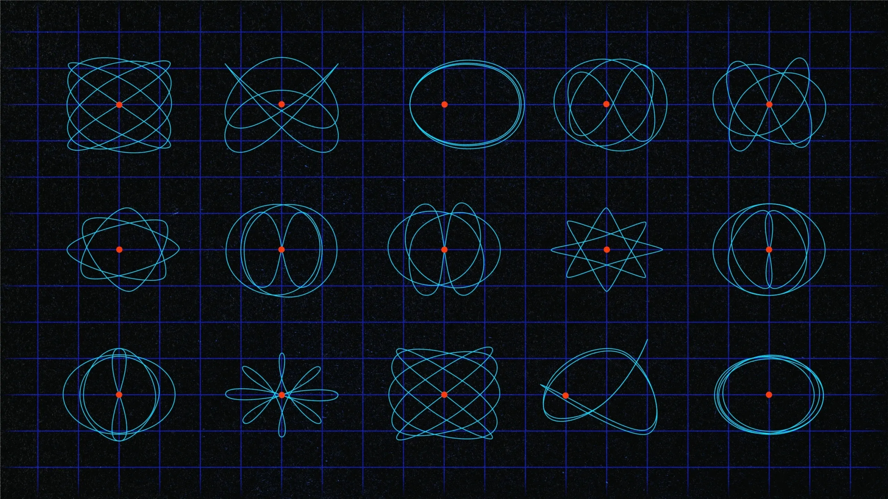

Yangiliklar Biz bilan o`rganing


Normali fazolar bo‘limi funksional analizning asosiy qismi bo‘lib, bu yerda Banax va Hilbert fazolari kabi to‘liq metrik fazolar o‘rganiladi. Ushbu fazolar cheksiz o‘lchamli fazolarni tadqiq qilish uchun ishlatiladi va ular matematik fizika, ehtimollik nazariyasi hamda differensial tenglamalar bilan bog‘liq.
Operatorlar nazariyasi chiziqli operatorlarning xossalarini o‘rganadi. Bu bo‘limda operatorlarning spektri, kompakt operatorlar, normali va unitar operatorlar kabi tushunchalar tahlil qilinadi. U asosan kvant mexanikasi va differensial tenglamalar bilan bog‘liq masalalarni yechishda qo‘llanadi.
Spektral analiz esa operatorlarning spektral xossalarini o‘rganadi. Bu bo‘lim kvant mexanikasi va to‘lqin tenglamalarida ishlatiladigan chiziqli operatorlarning o‘z qiymatlari va o‘z funksiyalarini tahlil qiladi. Masalan, Furye qatorlari va integral operatorlar spektral analizning asosiy misollaridandir.